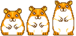

Ni un TROJAN
Il ne s'agit pas non Plus d'un BUG
C'est un vrai un POISON ! une MISERE
Plutôt un vrai EMPOISONNEMENT !
UNE VRAI CATASTROPHE
MAIS SANS DANGER !
POUR VOTRE PC
Par ICI suivez le guide .....
Salut à tous! ! !
Je vous invite à suivre attentivement les instructions ci dessus....!!
1°)
Montez le volume à fond!!!!!!
2°) Levez-vous de votre bureau,
agenouillez-vous et commencez à vous dandiner...
3°) Chantez à tue-tête ce
refrain pendant 15 heures consécutives....
AHAHAH!!!
AHAHAH!!!
Avant que n'arrive l'ambulance du service neurologique du centre hospitalier
le plus proche (prévenu par les voisins) renvoyez le tantra à vos
amis...
Si vous l'envoyez à moins de 4 personnes, il y aura 0,0001% de
chances d'inverser les effets du choeur de l'asile d'aliénés.
Si vous
l'envoyez à un nombre de personnes compris entre 5 et 10, vous aurez 0,00001% de
chances de débuter à Star académy
avec un show ( pour les plus huppés)
sera considéré comme un véritable défi lancé à Florence Brocoli (ou à Monsieur
Décobert...)
Réussirez-vous à la dérider, serez-vous le maillon fort??
Mais si vous l'envoyez à un nombre de personnes compris entre 10 et 15,
là, c'est votre image publique que vous souillez à jamais...
Quand ils vous
croiseront, ils ne pourront s'empêcher de rire!!! Pathétique...
Enfin, si
vous l'envoyez à plus de 16 personnes, vous contribuerez à la diffusion dans le
monde entier du virus tititita tititutu...
L'humanité voit ses jours
comptés!!!!
Allez un dernier petit chant
avant d'entrer a l'asile
!!!
TITITA TITUTU TIIIPATITITUUU
TITITA TITUTU TIIIPATITITUUU,
TUTUTU TUTUTU TUTUTU
AHAHAH!!!
Le but de cette page web est de faire une blague à vos amis !!
Allez envoyez leur cette page en pleine poire lol !!! Vengez vous sur eux!
Signer gegeweb60@hotmail.com qui fait tapatitutu
Merci piumetta 2A